Call the police on 999. Don't wait to speak to the club first.
For an urgent concern about a child in Hull, you can also call children's social care:
Once the child is safe, let Tom or Eleanor know so the club can follow up.
For any worry about a child's safety or wellbeing at East Hull Falcons, contact Tom or Eleanor. No concern is too small, and you don't need proof.
Assistant Welfare Officer
At U10 and U11 training and matches
Club Welfare Officer
At U16 girls' training and matches
Tom is the first contact for the U10s and U11s. You can go straight to Eleanor at any time, and you should if your concern involves Tom or a team he coaches. Both are DBS-checked and have completed the FA's safeguarding and welfare officer training.
You can also speak to your team's coach at any session. Our coaches are DBS-checked and safeguarding-trained, and will pass your concern to Tom or Eleanor the same day. If your concern is about a coach, go straight to Tom or Eleanor, or use the contacts below.
Please don't raise concerns in the WhatsApp community or team chats. Contact Tom or Eleanor directly so the details stay private.
You can go outside the club at any time. Use these contacts if you can't reach Tom or Eleanor, if your concern is about either of them or someone close to them, or if you feel the club hasn't acted.
What you share is kept private and passed only to people who need it to keep a child safe. Records are stored securely by Eleanor, not in club chats or shared inboxes.
If anything at football makes you feel worried, upset, scared or uncomfortable, tell a grown-up you trust. It is never your fault and you won't be in trouble for speaking up.
Stay calm and listen. Your job is to pass it on, not to work out whether it's true.
Tap a document to read it here, or open it as a PDF to save or print. If you'd like a printed copy, ask your coach.
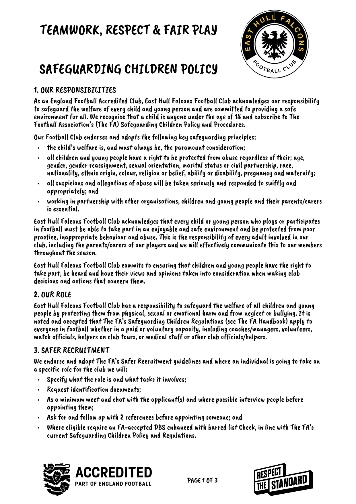
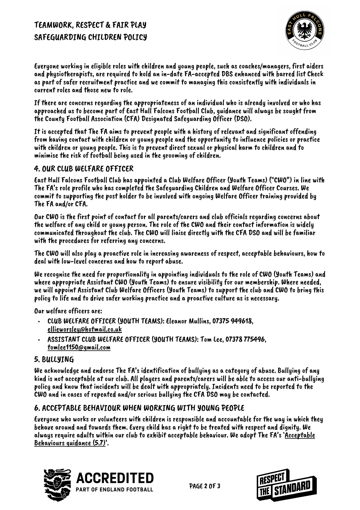
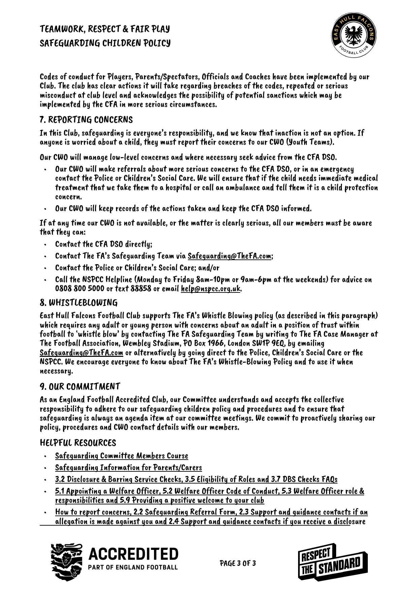
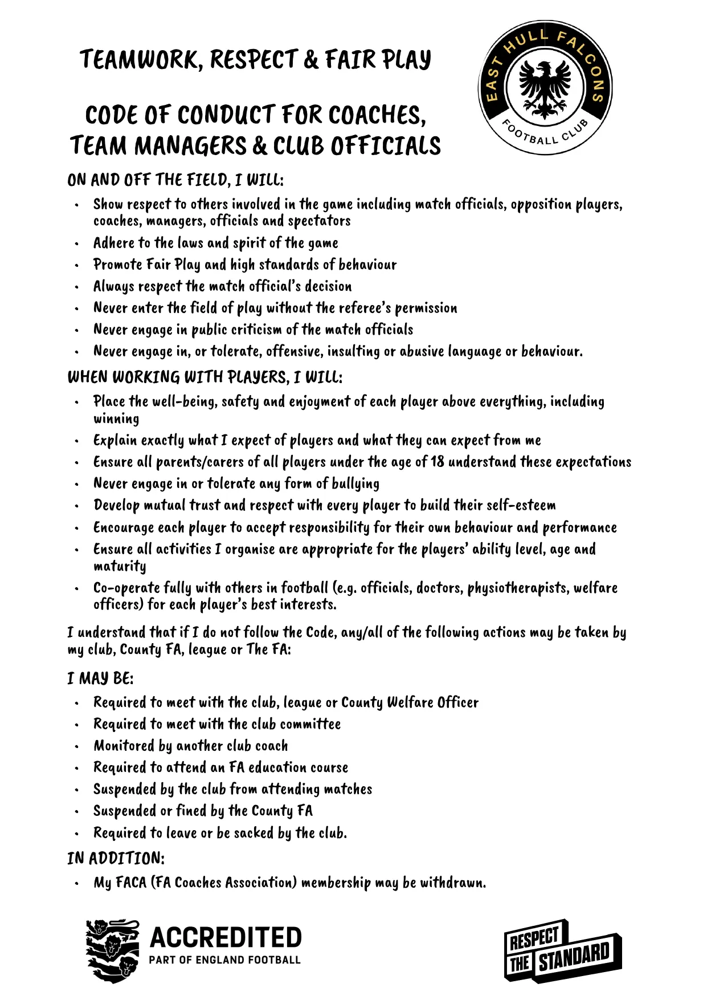
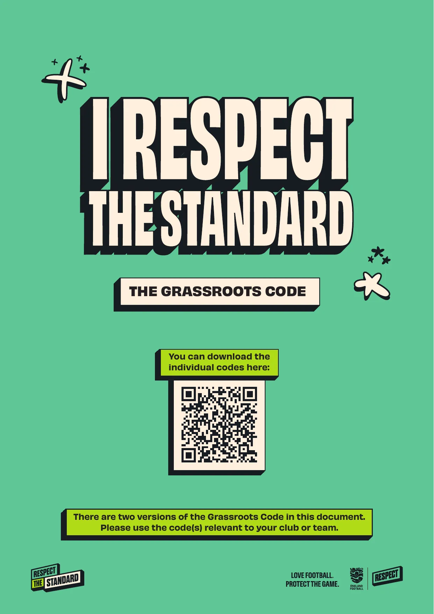
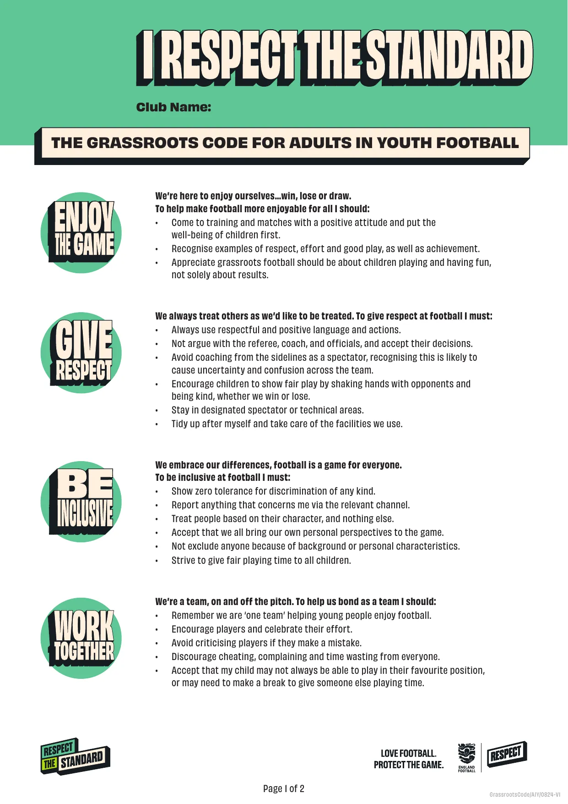
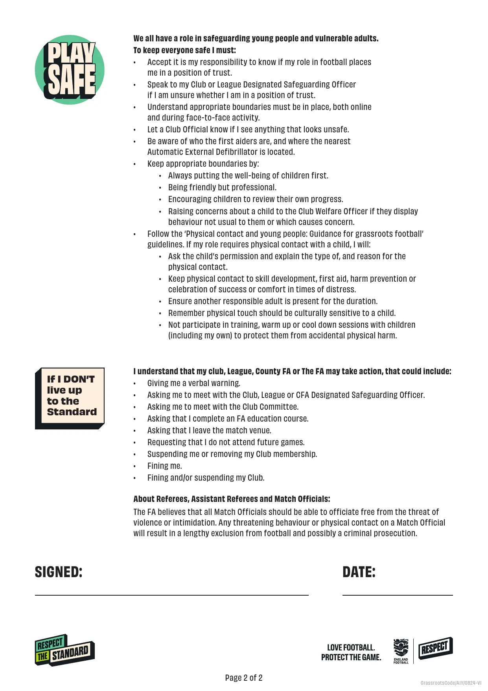
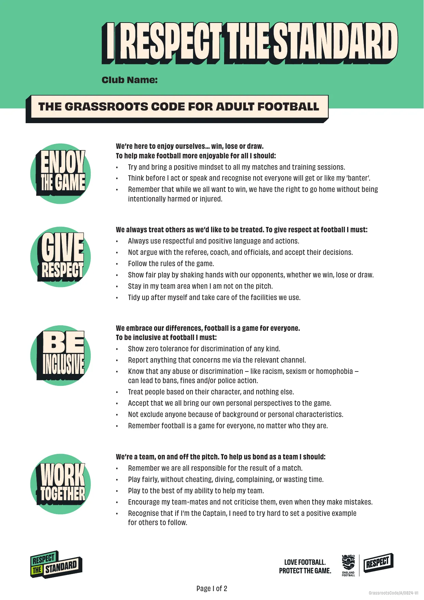
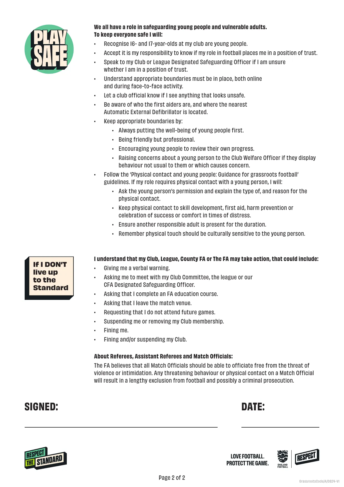
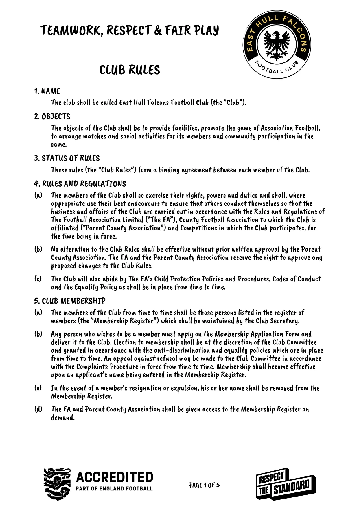
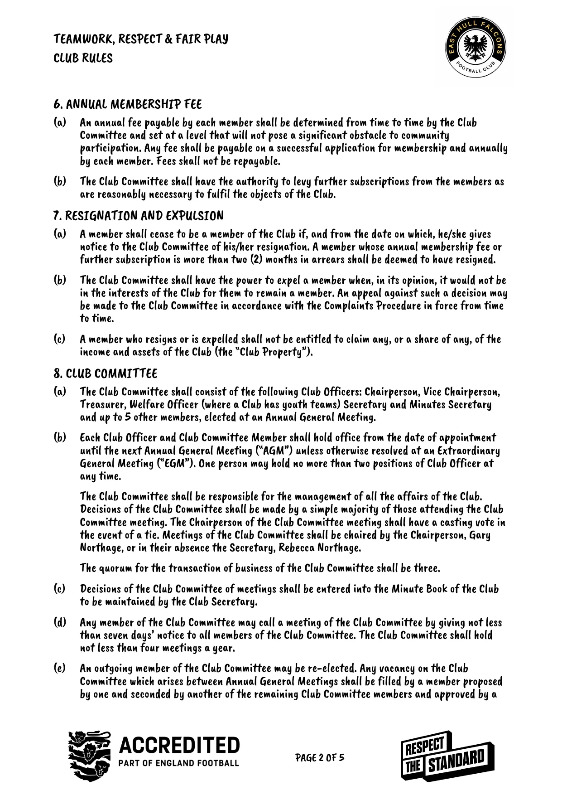
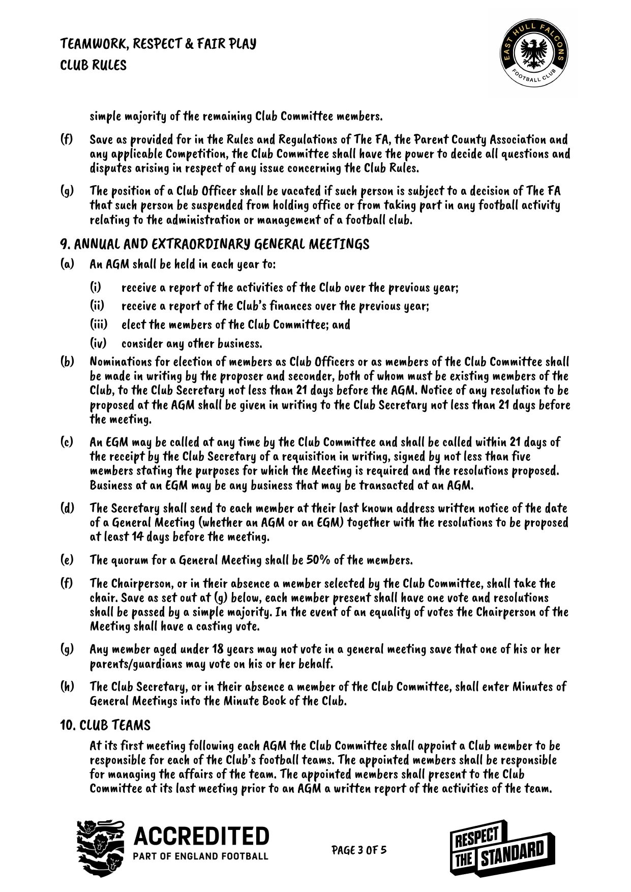
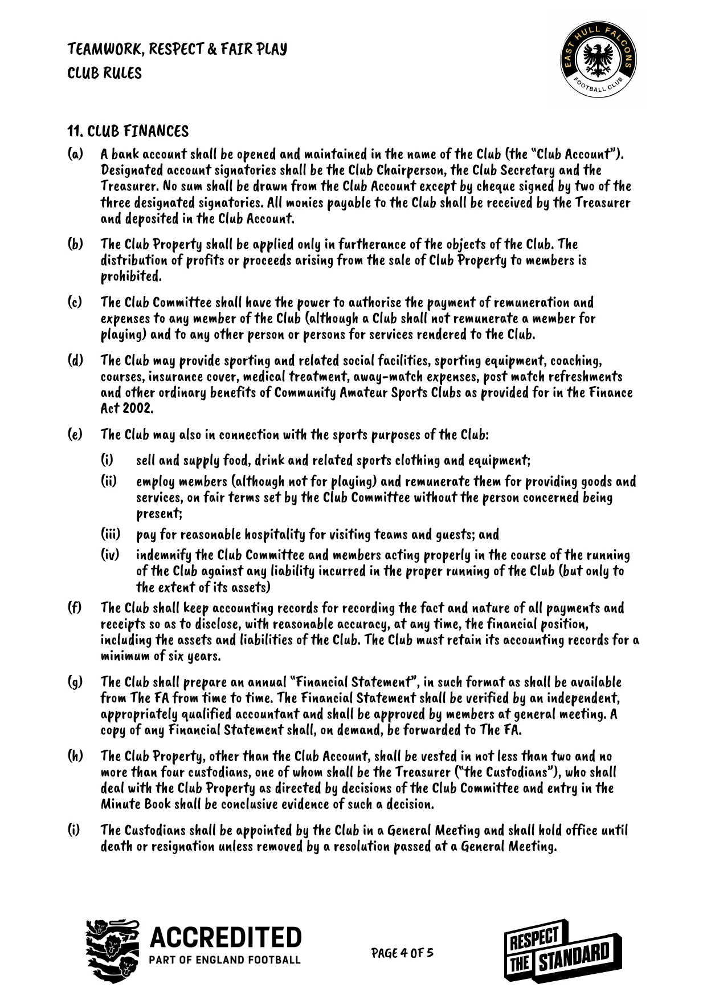
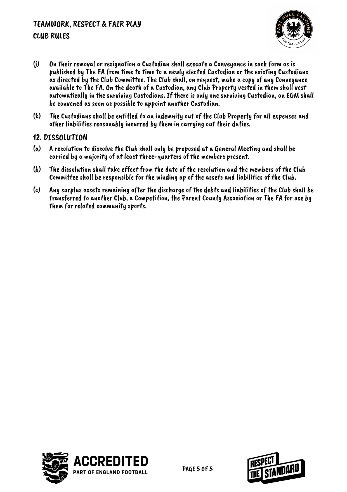
Not every issue is a safeguarding concern. Questions about team selection, playing time or registration go to the Club Secretary or Club Chair.